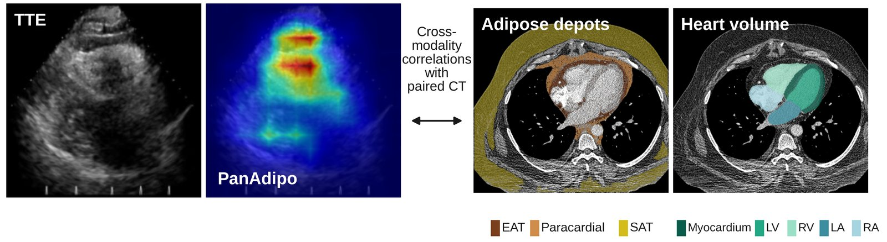

Epicardial adiposity from any routine echocardiogram
PanAdipo is a video model that reads standard 2D echo clips (any view, TTE or POCUS), scores prominent epicardial fat, and maps the score to CT-measured epicardial adipose tissue (EAT), with an age- and sex-specific nomogram.
How it works
The model runs on your own computer: images never leave it. This page only does arithmetic on scores, so you can explore the nomogram and review results without any data being sent anywhere.
Load a DICOM study
Cine clips are masked to the ultrasound sector (no text, ECG or calipers) and resized to 256 × 256.
Score every clip
PanAdipo scores 16 frames per clip; the study score is the mean over clips.
Estimate EAT
The score maps to CT EAT volume (mL) and EAT / heart volume, calibrated on paired CCTA.
Nomogram & tracking
Age and sex give the probability of high EAT and a screening threshold; BMI flags occult adiposity.

Nomogram calculator
Enter a PanAdipo study score (from the pipeline) with the patient's age and sex. BMI is optional and enables the occult-adiposity flag.
Track results over time
Open a study_predictions.csv produced by the pipeline (or several). The file is read
by your browser only. Patients with two or more dated studies can be followed over time; occult adiposity and
screen-positive studies are summarised.
study_id, panadipo_score;
uses patient_id, study_date, age, sex, bmi when present.Run it on your studies
Inference needs Python and (ideally) a GPU, so it runs locally. Either the command line or the
local app (python app.py, a browser interface on your own machine) gives the same results.
git clone https://github.com/Cardiometabolic-Intelligence/PanAdipo.git && cd PanAdipo
conda env create -f envs/panadipo.yml && conda activate panadipo
./copy_weights.sh # model weights (v1.0 release)
python run_pipeline.py --studies_root /path/to/echo_dicoms --out_dir results/
python app.py # or: interactive local app at http://127.0.0.1:7860Cite
Aminorroaya A, …, Oikonomou EK*. AI-Enabled Echocardiography Identifies Prominent Epicardial Adiposity Associated with an Adverse Cardiometabolic Profile. Under review, 2026. *Corresponding author: evangelos.oikonomou@yale.edu